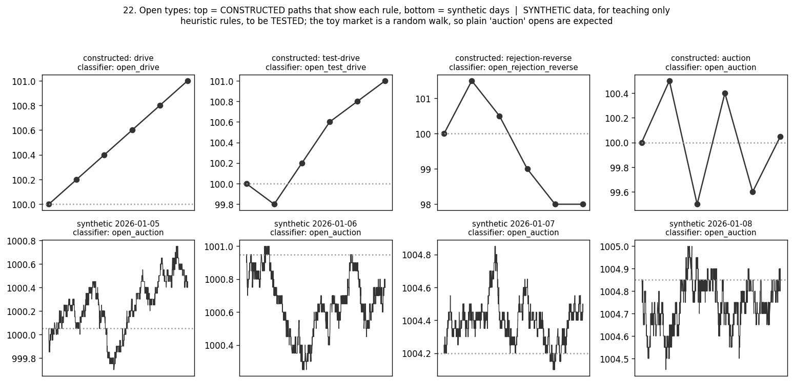

80% value-area rule, open types, gap fills.

Open types (open-drive, open-test-drive, open-rejection-reverse, open-auction) are classified from the first 30 minutes with explicit rules in `config.yaml`. The 80% rule (a day that opens outside value, re-enters it and is accepted tends to rotate across it) and gap-fill tendencies are listed here as hypotheses; their test harness belongs to Phase 6.
Traders repeat these as facts. This repo makes them measurable.
Synthetic or illustrative data unless a page says otherwise. Education only, not financial advice.